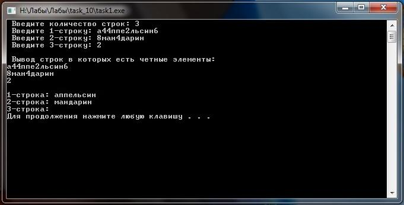

Лабораторное задание №10. Массив строк.
Условие задачи
Написать
программу, в которой с клавиатуры вводится до 10 символьных строк. Вывести
строки, в которых есть четные цифры. В каждой строке удалить все четные цифры.
Нахождение и удаление символов оформить в виде функций. .
Математическая модель
Для решения
поставленой задачи в главной ф-ии определим двумерный массив,
размером 10х100. На экран выведем сообщение о том что необходимо ввести
количество строк. Затем определим ф-ии: ф-ия для ввода строк, ф-ия для
поиска и вывода четных элементов в строке, ф-ия для нахожденя и
удаления четных цифр в строке, вывод измененного массива. Эти ф-ии удут
описаны далее.
В теле ф-ии для ввода строк определим цикл для вычисления номера строки в которую будут записыватся элименты.
В теле ф-ии по поиску и выводу строк в которых есть
четные элименты мы определим "флаг" и присвоим ему значение false.
Его опишим чуть поздней. Определим цик в теле которого определим
еще один цикл, а уже в теле этого цикла определим условную конструкцию,
котороя проверяет элимент строки яв ли он цифрой. Если он является
цифрой то в нутри этой конструкции определим условную конструкцию
котороя непосредственно будет проверять числовой элимент на четность.
Если он четный, то в теле условной конструкции определим еще одну
условную конструкцию. которая проверяет состояне "флага". Если флагу
присвоено значение false то на экран выводим сообщение о том что что
сейчас произойдет вывод строк в которых есть четные элименты. Далее
непосредственно поизойдет вывод строки в которой есть четные элименты.
Присвоение флагу значение true. Для того чтобы не выводилось каждый раз
сообщение о том что сейчас произойдет вывод строк в которых есть четные
элименты. Затем выполнится команда break необходимая для выхода из 2
цикла, который вычисляет номер столбца некоторой строки. Это сделано
для того чтобы каждый раз не выводилась одна и та же строке если в этой
строке несколько четных элиментов.
В теле ф-ии по нахождению и удалению четных
элиментов из строки. В нутри этой строки определим также 2 цикла. 1
цикл вычисляет номер строки, а 2 цикл вычисляет номер столбца некоторой
строки. В теле этого цикла также произойдет проверка, а является ли
элимент строки цифрой. Если элимент является цифрой то произойдет
проверка этого элимента на четность. А теле этой условной конструкции
определим еще один цикл, необходимый для "затирания" четного элимента.
А уже в теле этого цикла произойдет смещение элементов массива на один
влево. Для "затирания" четного элимента. Это смещение начнется не с
начала строки а с того элемента который является четным.
В теле ф-ии, по выводу отсортированого массива,
определим цикл для вычисления номера строки которую будем выводить.
Описание алгоритма
Для решения поставленой задачи в главной ф-ии определим двумерный массив str (char str [10][100]). Далеее на экран выведем сообщение о том что необходимо ввести количество сток. Затем определим ф-ии: ф-ия для ввода строк (input_str (n, str)), ф-ия для поиска и вывода
четных элементов в строке (search_even (n, str)), ф-ия для нахожденя и удаления четных цифр в
строке (del_even (n, str)), вывод измененного массива (output_str (n, str)), на вход они получают количество строк и собственно двумерный массив. Эти ф-ии удут описаны далее.
В теле ф-ии input_str, необходимой для ввода строк, опредеим чикл for (for (int i=0; i<n; i++)), для вычисления номера строки в которую будут записыватся элименты.
В теле ф-ии search_even, необходимой для поиска и вывода
строк в которых есть четные элемены, определяем флаг и присваеваем ему значение false (bool flag=false), его значение будет описано поздней. После чего определяем цикл for (for (int i=0; i<n; i++)), для вычисления некоторого номера строки, и еще один цикл (for (int j=0; str[i][j]!='\0'; j++)), для вычисления номара столбца некоторой строки. В теле этого цикла определим условную конструкцию if (if (str[i][j]>='1' && str[i][j]<='9'))для проверки элемента, а не является ли он цифрой. Если является то определим еще одну условную конструкцию if (if (str [i][j]%2==0)) для проверки числового элимента на четность. Если элимент четный то определим еще одну условную конструкцию if (if (flag==false)),
необходимой для вывода на экран сообщение о том что сейчас произойдет
вывод строк в которых есть четные элименты. Далее непосредственно
произойдет вывод строки и присвоение "флагу" значение true (flag=true),
для того чтобы сообщение, описаное в предыдущей условной конструкции,
не выводилась несколько раз. Далее выполнится комманда break,
необходимой для выхода из 2 цикла (for (int j=0; str[i][j]!='\0'; j++)) это сделано для того чтобы одна строка не выводилась несколько раз на тот случай если в строке несколько четных элиментов.
В теле ф-ии del_even, необходимой для для нахожденя и удаления четных цифр в
строке, Начало этой ф-ии одинаковое что и в ф-ии search_even. Различие происходит лишь в том что во 2 условной конструкции if (if (str [i][j]%2==0)), где происходит проверка на четность. В теле этой конструкции определяем еще один цикл for (for (int l=j; str[i][l]!='\0'; l++)) необходимый для "затирания" четного элимента. А уже в теле этого цикла произойдет смещение элементов массива на один
влево (str[i][l]=str[i][l+1]). Для "затирания" четного элимента. Это смещение начнется не с
начала строки а с того элемента который является четным.
В теле ф-ии output_str, предназначенной для вывода отсортированого массива, определяем цикл for (for (int i=0; i<n; i++)) для вычисления номера строки которую будем выводить.
Текст программы с комментариями
#include <iostream>
using namespace std;
void input_str (int n, char str [][100]) // ввод строк
{
for (int i=0; i<n; i++)
{
cout << " Введите " << i+1 << "-строку: ";
cin >> str [i];
}
}
void search_even (int n, char str [][100]) // поиск и вывод четных элементов в строке
{
bool flag=false; // определение флага
for (int i=0; i<n; i++)
{
for (int j=0; str[i][j]!='\0'; j++)
{
if (str[i][j]>='1' && str[i][j]<='9') // нахождение цифр в строке
{
if (str [i][j]%2==0)// проверка на четность цифры в строке
{
if (flag==false) // вывод сообщения о том что в строках есть четные элементы
{
cout <<
endl << " Вывод строк в которых есть четные элементы: " << endl;
}
cout << str [i] <<
endl; // вывод строк в которых есть четные элементы
flag=true; // присвоение флагу знач true чтобы каждый раз не выдовалось сообщение о том что в в строках есть четные элементы
break;// неообходимо для того что бы одну строчку не выводило несколько раз на тот случай если в строке несколько четных элементов
}
}
}
}
if (flag==false) // вывод сообщения о том что в строках нет четных элементов
{
cout << " Четных цифр в строках нет !!!" << endl;
}
}
void del_even (int n, char str [][100]) // нахождение и удаление четных цифр в строке
{
for (int i=0; i<n; i++) // цикл для вычисления индекса строки
{
for (int j=0; str[i][j]!='\0'; j++) // цикл для вычисления индекса столбца
{
if (str[i][j]>='1' && str[i][j]<='9') // нахождение цифр в строке
{
if (str [i][j]%2==0)// проверка на четность цифры в строке
{
for (int l=j; str[i][l]!='\0'; l++) // цикл для того чтобы удалить четное число из строки
{
str[i][l]=str[i][l+1]; // смешение элементов на одну позицию назад для удаления четного числа из строки
}
j--;
}
}
}
}
}
void output_str (int n, char str [][100]) // вывод строк
{
cout << endl;
for (int i=0; i<n; i++)
{
cout << i+1 << "-строка: " << str [i] << endl; // вывод строк
}
}
int main ()
{
char str [10][100];
int n;
cout << " Введите количество строк: ";
cin >> n;
input_str (n, str); // ввод строк
search_even (n, str); // поиск и вывод четных элементов в строке
del_even (n, str); // нахождение и удаление четных цифр в строке
output_str (n, str); // вывод строк
system ("pause");
return 0;
}
Откомпилированный файл может быть получен по ссылке
Тесты и анализ результатов
Тест 1
При вводе количества строк:6. И после ввода:
1) строки - студент. 2) строки - 8ford2. 3) строки - 8m2icrosoft3. 4) строки - 65. 5) строки -qwerty. 6) строки -3.
Результат работы программы представлен на рисунке ниже
Тест 2
При вводе количества строк:3. И после ввода:
1)строки - а44ппе2льсин6. 2) строки - 8ман4дарин. 3) строки - 2.
Результат работы программы представлен на рисунке ниже
